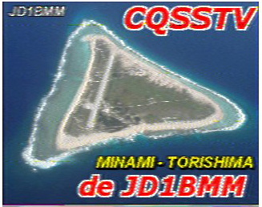
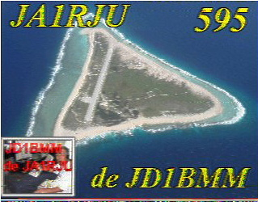

| Flash Back ! |
[Back Issues May.2009]
TIME:UTC(JST-09:00)
Report from JA1RJU(PM95sq)
31.May.2009(15:00c)
BV2YA/b 12:06- 50.001 CW Beacon
Report from JA1RJU(PM95sq)
30.May.2009(15:00c)
BV2YA/b 00:00- 50.001 CW Beacon
(JR6YAG/b 00:00- 50.038 CW Beacon Okinawa)
VR2SIX/b 00:00- 50.075 CW Beacon
VR2ZXP 02:01 50.110 SSB
DS5JQK 02:05 50.155 CW
BG7IBJ 03:45 50.115 SSB
DS4GKG 04:07 50.115 SSB
BG4XTW 04:11 50.115 SSB
BW2/JN3TVX 04:14 50.115 SSB
(UR8MH 04:44 50.100 CW JA1-into QM06)
6K2GAJ 06:25 50.160 SSB
(HA0DU 07:00- 50.103.5 CW JA3s only)
(HA8CE 07:25 50.098 CW JA3)
5B4FL 07:39 50.098 CW
(9A2SB 07:53 50.098 CW JA3)
5B4FL 07:56 50.098 CW
(SP8AWL 08:15 50.098 CW JA3)
(ON4IQ 08:36 50.092.3 CW JA3.4.6)
|
◎午後（07:00z=16:00JST）から、今季初のヨーロッパのオープンがあった。
最初のオープンはJA3エリアへ入感してきたハンガリーのHA0DUだった。信号は一時は強力なものだったが、
オープンしていた3エリアでも限られた地域(PM74付近)だけのスポット的なものだった。 このHAのオープンは1エリアではほとんど確認できなかったが、 3エリアをコールしている5B4FLの信号は東京(PM95)でも確認出来た。 今日のコンデションは約1時間半続いていたが、オープンしているエリアでも全般的にヨーロッパからの信号は弱く、 JA/EUのリポートがクラスターに載っていたわりにはQSOは難しいものだった。 この日は他にUT7IL、HA3HV、OZ3K、PA4VHF、OE1SOW、OH3XRなどのリポートがクラスターにアップされていた。 HA0DUは8局のJAsとQSO出来たとのこと。このオープンの前に1エリアでUN8MHが入感した。 |
Report from JA1RJU(PM95sq)
29.May.2009(15:00c)
BV2YA/b 00:00- 50.001 CW Beacon
(JA6YBR/b 00:00- 50.017 CW Beacon Miyazaki)
(JR6YAG/b 00:00- 50.038 CW Beacon Okinawa)
JD1YBJ/b 00:00- 50.040 CW Beacon (Minamitorishima)
VR2SIX/b 00:00- 50.075 CW Beacon
VR2UW 00:40 50.103 CW
VR2XLN 00:40 50.120 SSB
XV3AA 01:40 50.130 SSB
BA7IO 01:46 50.103 CW CQing
DU1EV/B 02:00- 50.008 CW Beacon
BU2AQ 02:10 50.110 SSB CQing
BD7NWF 02:47 50.130 CW
VR2SIX/b 04:30- 50.075 CW Beacon
VR2XLN 04:45 50.120 SSB
BD7NWF 04:47 50.130 CW
VR2SIX/b 09:00- 50.075 CW Beacon
BU2AU 09:14 50.110 SSB CQing
Report from JA1RJU(PM95sq)
28.May.2009(15:00c)
BV2YA/b 23:00- 50.001 CW Beacon
VR2SIX/b 23:00- 50.075 CW Beacon
BA7IO 23:17 50.104 CW CQing
*********************************************
VR2SIX/b 00:00- 50.075 CW Beacon
BA7IO 00:00 50.104 CW CQing
VR2UW 00:07 50.106 CW CQ DX
BA8AG 02:40 50.102 CW CQing
DU1EV/B 04:30 50.008 CW Beacon
(JR6YAG/b 04:30- 50.038 CW Beacon Okinawa)
VR2SIX/b 04:30- 50.075 CW Beacon
BD9BA/b 05:28- 50.105 CW Beacon strong!(QTH=Xian OM44LG)
VR2PX 05:48 50.105 CW
VR2XMT 05:57 50.110/115 SSB
BA8AG 06:14 50.102 CW CQing
BV2YA/b 07:20- 50.001 CW Beacon
VR2SIX/b 07:20- 50.075 CW Beacon
BU2AQ 07:55 50.110 CW CQing
Report from JA1RJU(PM95sq)
27.May.2009(15:00c)
BV2YA/b 00:20- 50.001 CW Beacon
(JR6YAG/b 00:20- 50.038 CW Beacon Okinawa)
VR2SIX/b 00:20- 50.075 CW Beacon
VR2SIX/b 02:20- 50.075 CW Beacon
XV3AA 02:30 50.130 SSB
JD1YBJ/b 06:50- 50.040 CW Beacon (Minamitorishima)
VR2SIX/b 06:50- 50.075 CW Beacon
JD1BMM 07:05 50.160 SSB CQing RS 59!
VR2PX 08:35 50.105 CW CQing
VR2UW 08:53 50.102/116 CW CQ DX
DU1GM 09:03 50.101 CW CQ
BA8AG 09:44 50.102 CW
Report from JA1RJU(PM95sq)
26.May.2009(15:00c)
JD1YBJ/b 00:00- 50.040 CW Beacon (Minamitorishima)
VR2SIX/b 00:00- 50.075 CW Beacon
VR2SIX/b 09:15- 50.075 CW Beacon
BD4QH 09:20 50.125 SSB
Report from JA1RJU(PM95sq)
25.May.2009(15:00c)
VR2SIX/b 01:00- 50.075 CW Beacon
BG7IBX 01:17 50.110 SSB
(JR6YAG 02:00- 50.038 CW Beacon Okinawa)
BD7NWF 02:07 50.102 CW
BY8DX 02:15 50.103 CW
BA7IO 02:28 50.104 CW
VR2SIX/b 08:20- 50.075 CW Beacon
VR2UW 09:09 50.111 CW CQing
AH2G/B 09:20- 50.0045 CW Beacon (QK23)
Report from JA1RJU(PM95sq)
24.May.2009(15:00c)
HL2KV 23:15 50.105 CW
BD4QH 23:30 50.120 SSB
DS2KGJ 23:40 50.130 SSB
BG4TBJ 23:53 50.137 SSB
DS5DNO 23:53 50.137 SSB
6K5AQY 23:56 50.104 CW
**********************************************
BV2YA/b 00:20- 50.001 CW Beacon
VR2SIX/b 01:50- 50.075 CW Beacon
BD4CZX 01:58 50.105 CW
BA4TB/5 02:00 50.146 SSB
Report from JA1RJU(PM95sq)
23.May.2009(15:00c)
(K0GU 22:40- 50.100/105 CW JA1.2.3.4.7.0)
(N5DG 23:10 50.100/096 CW JA1.2.3.4.7)
N5DG 23:52 50.096 CW
(W7CNK 23:28- 50.100/104 CW JA1.7)
(K5RK 23:45 50.098 CW JA1.7.0)
**********************************************
HL5BMX 00:05 50.096 CW
HL5YI 00:11 50.105 CW
VR2SIX/b 00:20- 50.075 CW Beacon
VR2UW 00:20 50.116 CW
JD1YBJ/b 00:25- 50.040 CW Beacon (Minamitorishima)
VR2UW 01:25 50.106 CW CQ DX
6K5AQY 01:50 50.105 CW
BA8AG 01:52 50.101 CW
BA4TB/5 01:55 50.103 CW IOTA AS-137
HL5FKP 02:10 50.180 SSB
BA4TB/5 02:14 50.145 SSB
DS5JQK 02:20 50.135 SSB
XV3AA 02:40 50.135 SSB
Report from JA1RJU(PM95sq)
22.May.2009(15:00c)
(KH7Y 23:05- 50.105 CW 19 JAs QSO with JA2.3.4.6 only)
**********************************************
BV2YA/b 00:20- 50.001 CW Beacon
(JR6YAG/b 00:20- 50.038 CW Beacon Okinawa)
VR2SIX/b 00:20- 50.075 CW Beacon
VR2UW 01:15 50.110 CW CQing
VR2SIX/b 02:10- 50.075 CW Beacon
VR2UW 02:10 50.110 CW CQing
JD1BMM 02:40 50.160 CW/SSB Minamitorishima
BV2YA/b 04:35- 50.001 CW Beacon
(JA6YBR/b 04:35- 50.017 CW Beacon Miyazaki)
VR2SIX/b 04:35- 50.075 CW Beacon
JD1BMM 04:35 50.160 SSB Minamitorishima
BD4QH 07:06 50.125 SSB strong Es with JA7-8
JD1BMM 07:46 50.310 SSTV 595 FB!
JD1BMM 07:53 50.310 RTTY 599 FB!
BV2YA/b 10:00- 50.001 CW Beacon
VR2SIX/b 10:00- 50.075 CW Beacon
|
◎早朝、西日本を中心にハワイのKH7Yが入感した。JA6では599の信号もJA1(PM95)では残念ながら確認できなかった。 KH7Y・Fredによると、今朝のオープンでJA2. 3. 4. 6など19局とQSOできたと。 1エリアでは午後からJD1/南鳥島と同時にJA7.8の強力なEsによる伝搬がみられた。 南鳥島のJD1BMM・石原さんの信号はここのところ毎日の様に50.160MHzのSSB/CWでJA本土に届いているが、 今日は特にSSTV/RTTYの信号は強力だった。今年3月の50MHzの狭帯域データ通信の使用周波数区分改正でQSOは楽になった。 |


Report from JA1RJU(PM95sq)
21.May.2009(15:00c)
JD1BMM 04:55 50.160 SSB Minamitorishima
VR2SIX/b 05:57- 50.075 CW Beacon
JD1YBJ 05:58- 50.040 CW Beacon (Minamitorishima)
JD1YBJ 09:50- 50.040 CW Beacon
Report from JA1RJU(PM95sq)
20.May.2009(15:00c)
BV2YA/b 00:20- 50.001 CW Beacon
(JR6YAG/b 00:30- 50.038 CW Beacon)
VR2SIX/b 01:40- 50.075 CW Beacon
DU7/PA0HIP 04:20 50.110 CW CQ
BV2YA/b 04:20- 50.001 CW Beacon
JD1BMM 09:35 50.160 CW/SSB Minamitorishima
Report from JA1RJU(PM95sq)
19.May.2009(15:00c)
BV2YA/b 00:20- 50.001 CW Beacon
VR2SIX/b 00:20- 50.075 CW Beacon strong!
VR2UW 00:58 50.110 CW CQing
VR2SIX/b 05:48- 50.075 CW Beacon strong again!
BA4TB 07:50 50.110 CW CQing
Report from JA1RJU(PM95sq)
18.May.2009(15:00c)
BV2YA/b 00:00- 50.001 CW Beacon
VR2SIX/b 00:00- 50.075 CW Beacon strong!
VR2SIX/b 02:30- 50.075 CW Beacon still good!
BA4TB 08:08 50.110 CW CQing
VR2SIX/b 10:30- 50.075 CW Beacon
Report from JA1RJU(PM95sq)
17.May.2009(15:00c)
VR2SIX/b 23:20- 50.075 CW Beacon
BV2YA/b 23:25- 50.001 CW Beacon
**********************************************
VR2XMT 00:20 50.125 SSB
BX5AD 00:25 50.115/117 SSB
BV4VR 00:27 50.112 SSB
BX4AP 00:29 50.120 SSB
BW1/VR2RR 00:45 50.113 SSB
BV1EJ 00:50 50.123 SSB
VR2XMT 00:58 50.130 SSB
BV4VR 01:00 50.103 CW
BW1/VR2UNA 01:45 50.113 SSB
BU2AQ 02:25 50.120 SSB VR2/BV's strong!
BW1/VR2JD 02:35 50.113 SSB
DU1EV 06:08 50.106 CW
HL2KV 06:09 50.106/122 CW
HL2ST 06:11 50.122 CW
(DU1EV 06:12 50.122 SSB into JA7/8)
BU2AQ 07:40 50.110 CW
Report from JA1RJU(PM95sq)
16.May.2009(15:00c)
DS5KJR 01:27 50.110 CW
6K2DFG 01:31 50.130 SSB
HL5FKP 01:35 50.180 SSB
6K5AKY 01:37 50.150 SSB
6K2FRY 01:38 50.140 SSB
DS5ISO 01:40 50.133 SSB HL/DS/6K's strong!
Report from JA1RJU(PM95sq)
15.May.2009(15:00c)
BV2YA/b 01:40- 50.001 CW Beacon
VR2SIX/b 09:47- 50.075 CW Beacon
BD4QH 09:58 50.110 SSB
Report from JA1RJU(PM95sq)
14.May.2009(15:00c)
Report from JA1RJU(PM95sq)
13.May.2009(15:00c)
BY-TV 00:00- 49.750 -- strong!
BV2YA/b 01:00- 50.001 CW Beacon
VR2SIX/b 01:00- 50.075 CW Beacon
(JR6YAG/b 02:00- 50.038 CW Beacon Okinawa)
Report from JA1RJU(PM95sq)
12.May.2009(15:00c)
BV2YA/b 01:30- 50.001 CW Beacon
Report from JA1RJU(PM95sq)
11.May.2009(15:00c)
Report from JA1RJU(PM95sq)
10.May.2009(15:00c)
Report from JA1RJU(PM95sq)
09.May.2009(15:00c)
Report from JA1RJU(PM95sq)
08.May.2009(15:00c)
DU7/PA0HIP 04:50 50.110 CW CQ
HL2KV 06:35 50.110 CW
BD4CZX 09:34 50.110 SSB CQ
VR2UW 09:43 50.110 CW CQ
VR2SIX/b 09:43- 50.075 CW Beacon
HL4CEL 09:45 50.105 CW
HL4XM 09:46 50.110 CW
HL5BMX 09:49 50.130 SSB
Report from JA1RJU(PM95sq)
07.May.2009(15:00c)
◎ 昨日に引き続き北米がオープン。QSOはJA8/7が主だったが、太平洋に面したJA1エリアの一部でもQSO出来た。
(KE7V 22:39-22:57 50.096 CW JA1.2.7.8)
(NL7Z/b 22:43- 50.063 CW Beacon JA7)
(VE7DAY 22:48-23:01 50.098 CW JA1.JA7)
(KL7IKV 22:57- 50.110 CW JA7.JA1
(K7OFT 22:59 50.115 CW JA7)
(VE7CC 23:04 50.115 CW JA7)
(KL7OO 23:15 50.115 CW JA7)
(N6KMR 23:20 50.294 JT65a JA7)
(KE7V 23:28 50.097 CW JA8)
(KL7IKV 23:29-00:09 50.110 CW/SSB JA1.7.8)
**********************************************
(W7GJ 00:39 50.100 CW JA1)
(W6YLL 00:42 50.100 CW JA1)
(W7MEM 00:45 50.100 CW JA1) (※ Report from DXSAPE)
----------------------------------------------
DU7/PA0HIP 09:49 50.110 CW
Report from JA1RJU(QM06cb)
06.May.2009(15:00c)
◎ QRV on 8J1ITU (World Telecommuncation Day QTH=QM06cb)
◎ 今季初めてEsによる早朝の北米がオープン。入感はJA8が主だったが、前日は午前中の西日本に続き、
午後からJA8方面のEsが異常に強力に長時間オープンしていて北方向のコンデションの上昇が見られた。
夏場の本格的な北米、ヨーロッパへのオープンはまだ先だが、QSOは地域性や設備により大きく左右されるので、
今年も"ストレスの溜まる"時期となるか？。
(K6QXY.KB7ME.WA7NA.W6XI 23:30-02:40)
Report from JA1RJU(QM06cb)
05.May.2009(15:00c)
◎ QRV on 8J1ITU (World Telecommuncation Day QTH=QM06cb)
VR2SIX/b 00:20- 50.075 CW Beacon
(JR6YAG/b 00:20- 50.038 CW Beacon Es=JA6/8)
HL5FKP 07:07 50.160 SSB
HL2KV 08:29 50.125 SSB
HL2JFM 09:37 50.135 CW
Report from JA1RJU(QM06cb)
04.May.2009(15:00c)
◎ QRV on 8J1ITU (World Telecommuncation Day QTH=QM06cb)
Report from JA1RJU(PM95sq)
03.May.2009(15:00c)
Report from JA1RJU(PM95sq)
02.May.2009(15:00c)
BV2YA/b 01:00- 50.001 CW Beacon
VR2SIX/b 01:00- 50.075 CW Beacon
(JA6YBR/b 01:00- 50.017 CW Beacon Es=JA3-JA6)
JD1BLK 01:15 50.120 SSB/CW
VR2MY 01:45 50.106 CW
BD7NWF 01:46 50.100 CW
VR2XMT 01:54 50.115 SSB
AH2G/B 02:48- 50.0045 CW Beacon
DU1EV/B 04:20- 50.0008 CW Beacon
DU7/PA0HIP 04:50 50.115 CW
BV2YA/b 05:45- 50.001 CW Beacon
BA4TB 05:58 50.113 CW CQ
DU7/PA0HIP 09:30 50.115 CW/SSB
AH2G/B 09:40- 50.0045 CW Beacon
|
◎5月に入り、ようやくEsによる本格的な伝搬がみられる様になってきた。
伝搬の範囲は、東方面のJD1/Mから、JD/O、KH2、BA/BG、BV、HL、DU、VR2の2,000-3,000kmの伝搬が主だが、
同時にEsによる国内の強力なスキャッターも楽しめる時期となった。 期待されたサイクル24の太陽活動も立ち上がりが遅れ、春のDXシーズンのF2伝搬はほとんど期待出来なかったが、 今年の5/6月のマルチホップは！？。 |
Report from JA1RJU(PM95sq)
01.May.2009(15:00c)
BV2YA/b 01:54- 50.001 CW Beacon